2026–2027学年 第1学期
女装设计 · 第03周
江西服装学院 · 服装设计学院Jiangxi Institute of Fashion Technology · Department of Fashion Design
找到摩擦，长出你自己的主题 第三章 女装设计定位 —— 风格与主题 ｜ 证据 · 四关 · 发散
第03周｜2 学时（45＋45 分钟）
主题不是想出来的，是从真实的摩擦里长出来的。
任课教师 李允耕 博士 / Dr. Lee
① 三个成见 各配一张打破它的参考图 参考图
② 我的入口 七种流程里选一种，标出最强／最弱的一步 流程图
③ 白布问题 1 张草图 ＋ 1 句话 → 本周发散板的种子 草图
④ 10 张参考图 每张一句：看中它的哪一层造型语言 参考图
第02周 A3「我的时装世界」四块——本周的原料（示意） 本课件含 1 Granary（摄影 Rebecca Maynes 等）与清华美院新闻图片，按课堂研究合理使用，版权属原作者。仅发给本课程选课学生：课程网页是不被搜索引擎收录的限定链接，请勿外传链接或转发图片。
第1课时｜45分钟
女装设计 · 第03周
第03周｜风格 · 主题 · 发散
主题不是想出来的，是从真实的摩擦里长出来的 第01周你学会了核对别人的衣服，第02周你推翻了自己的默认设置；这周先看真实的学生怎样走完这条路 ，再把它变成你自己的主题，铺开到 27 格。
第1课时 只看成品第03页 → 承上·风格第04–05页 → 真实过程第06–07页 → 四关·入口第08–10页 → 证据第11–12页 → 四句话检查第13页
第2课时 五个人：概念→成形第14–18页 → 作品集的边界第19页 → 发散板 9 格第20–21页 → 讲评第22页 → 重写开场那一句第23–26页
本周产出 主题发散板（A3，9 格课内 ＋ 18 格课后）；这是大纲「灵感与主题板面」（平时作业 1，15 分）的前半；第04周把它收敛成主题板。
第1课时｜45分钟
女装设计 · 第03周
03 先只看成品
先只看成品：每张写一句“这套______” 60 秒一张，写完不改，折起来放好——下课前还要用。 三套都是学生作品，名字第2课时揭晓。
造型 A 这套 ______________________
造型 B 这套 ______________________
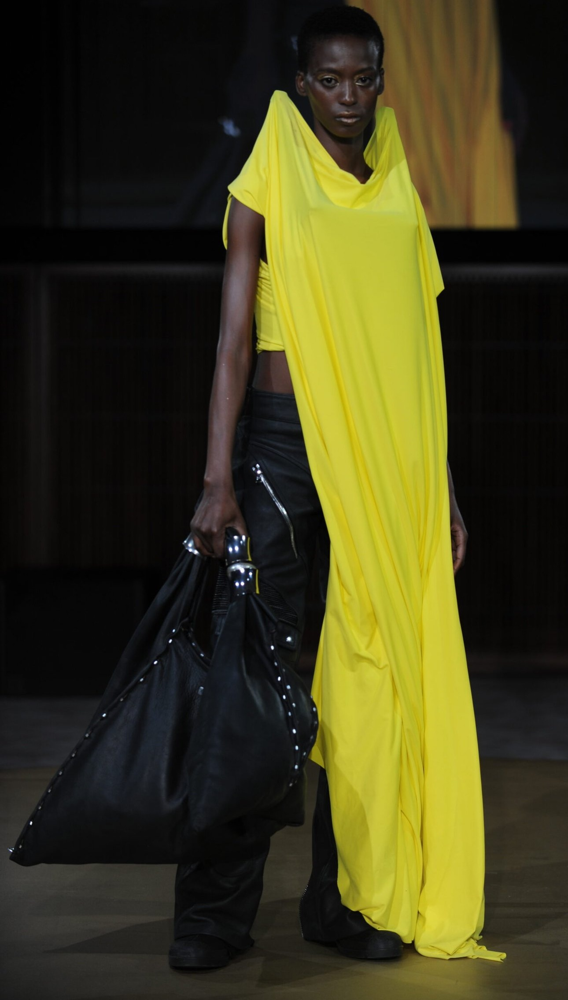
造型 C 这套 ______________________
图：1 Granary《CSM MA 2026》（2026.2.19）与《LCF MA Fashion 2026》（2026.2.21，秀场摄影 Roger Dean）｜设计师与出处见第14、16、18页｜仅课堂研究使用｜访问 2026.9.20
第1课时｜45分钟
女装设计 · 第03周
04 第02周→本周
今天不从零开始——上周 A3 底稿的四块，就是今天的四个原料 上周那张 A3 今天全程在桌上——四块各有各的去处。
立场句第三级：因为 ___（一个真实的人）在 ___（一个具体场合）会 ___，所以这条线必须 ___。 例（上周那件）：因为不得不逃走的人 在离开家的那一刻 会只能带走穿在身上的东西 ，所以这条线必须在六套上都出现 。Chalayan《After Words》2000秋冬：每件黑衣上那一条滚边画出来的线 （第02周第25页）。主题不一定从“问题”开始，从一个故事开始也行——但它最后要落到一条线上。 “这条线”＝白布草图里的造型决定；同一句从第01周到本周升三级。写在 A3 上（第04周要用）。
① 成见 → 去标签 落回“优雅、高级”的，改写成可观察条件 。例：“优雅” → “致辞近景里肩颈框景要完整”
现在：三个成见各画一道横线
→ 第05、10页检查
② 我的入口 → 事实句 你选的入口决定事实句 怎么写。不用改。例：毕业典礼 9 点开始，学位服要套 2 小时（入口①⑥）
现在：把你选的入口圈起来
→ 第09页
③ 白布问题 → 种子 白布草图里的造型决定，就是发散板顶部的种子 。例：“把下摆抬到膝下”，就是一颗种子
现在：白布草图翻到最上面
→ 第21页
④ 参考图 → 出处 每张补一行出处 ；最靠的两张写完整来源卡。例：品牌 · 2026秋冬 · look 12 · Vogue Runway
现在：数够了吗 中国≥3 国际≥3 非时装≥1
→ 附录 A11
承上 2 分钟 第02周流程图是教师示意，图片来自 Vogue Runway、V&A、MoMu 等档案；今天看真实学生的过程记录。A3 全程在桌上，不上传、不打分。
第1课时｜45分钟
女装设计 · 第03周
05 风格设定｜大纲第三章第一节
风格不是你选的词，是别人在你身上反复看到的同一条线 一个人的一个系列，五套连着看（Ivan Delogu Senes｜学生作品）。据报道：这个系列把重量 当主题，躯干、腹、髋、骨盆是承受的位置（底部那一句就是它的做法）；借月相说女性的劳动、等待与世代的韧性 。 检验语：你的“风格”能写成“在 ___ 轴上取 ___ 一侧，用 ___ 实现” 吗？写不出来的，还是标签（第10页）。
1
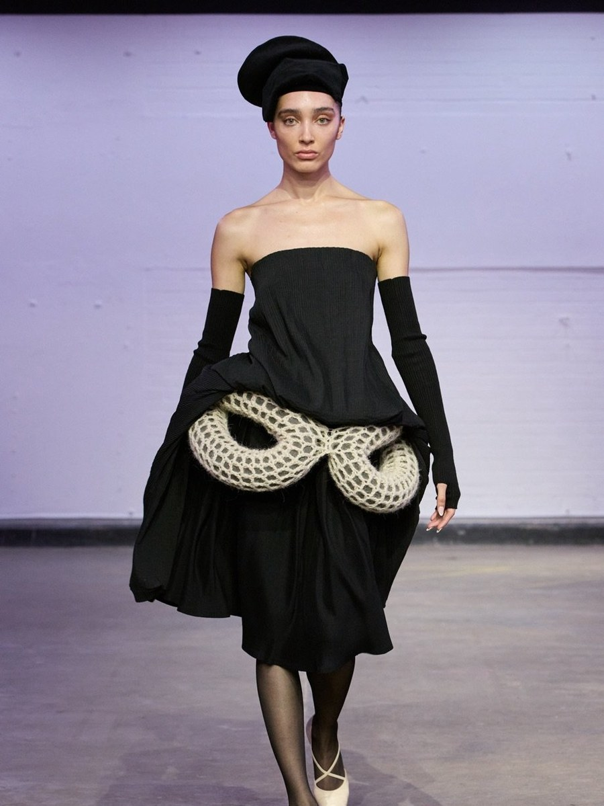
米色钩织的管子在髋部绕成一个「8」字，裙子从两边提起来架在上面 2
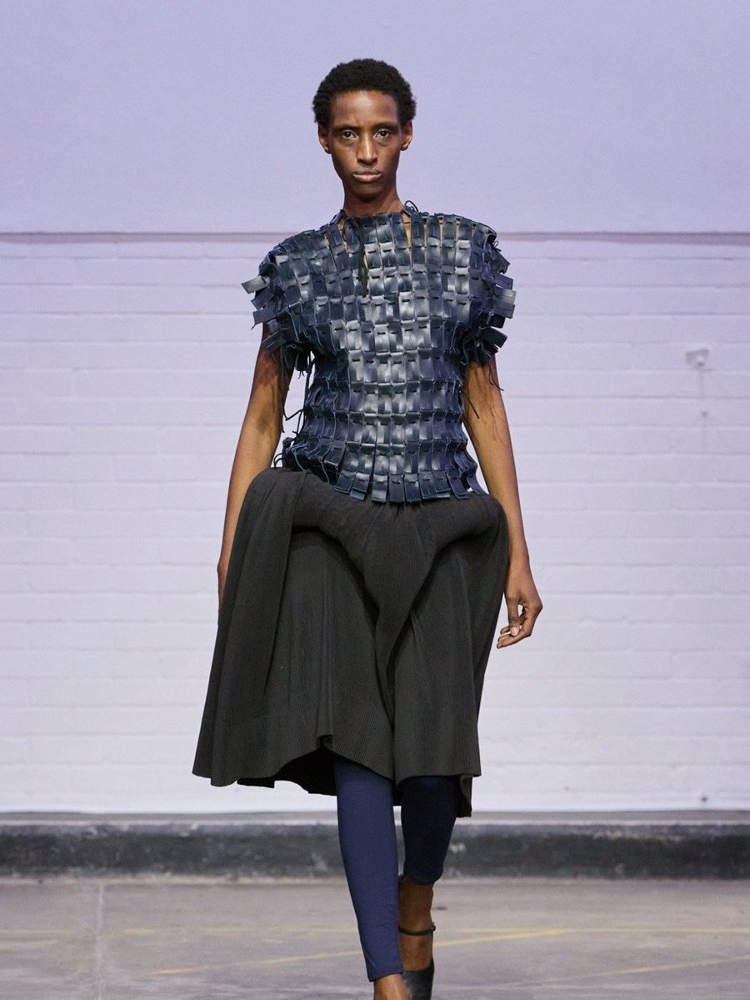
细褶裙的下摆在两侧被提起，身前拱成一道弧，腿前空着 3
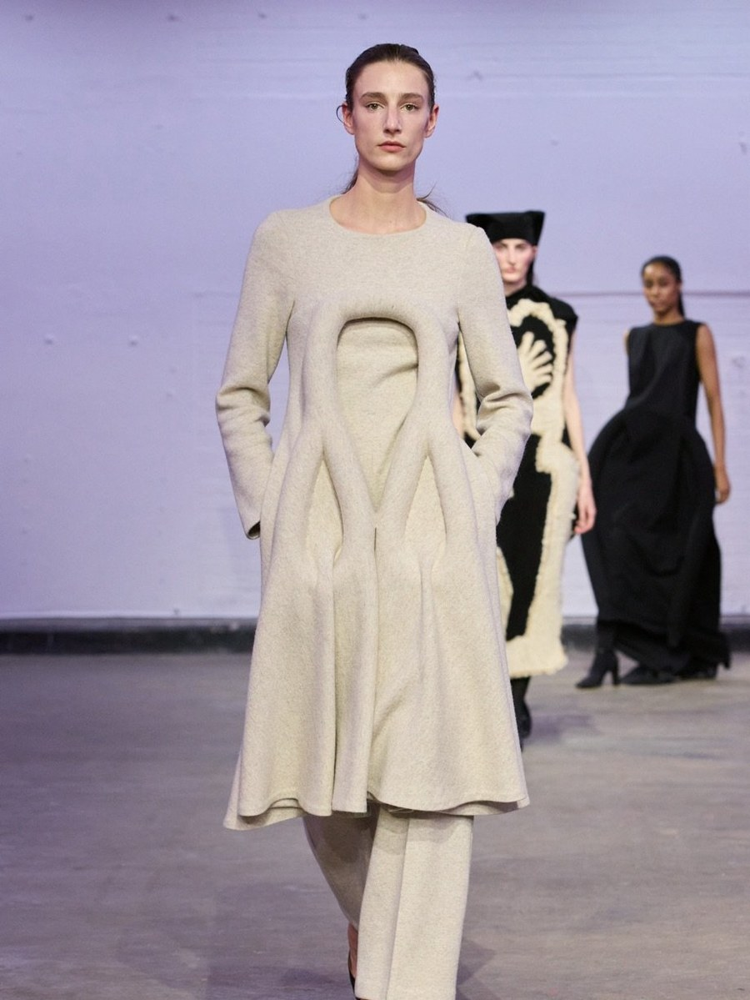
身前缝出凸起的绳状棱，胸口围出一个闭合的凹窝 4
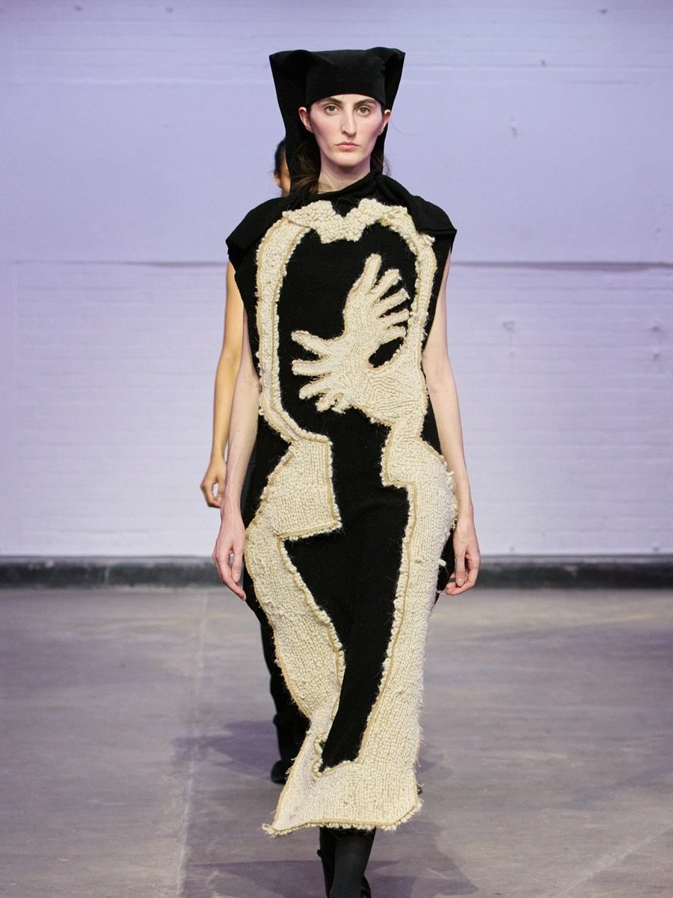
粗针织带走成一条不断的轮廓线，把黑色的一块围在里面 5
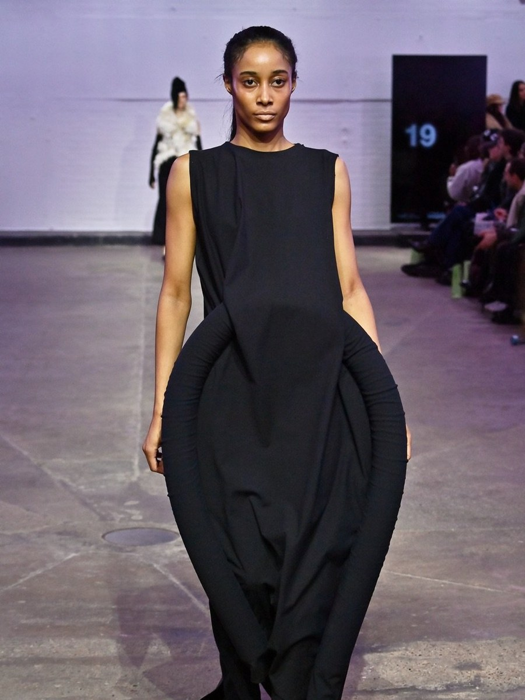
髋部套着一圈厚填充管，离开身体立着，裙身垂在环里 数出来的那条线 五套都在身体前面架一条边，边里面留出空的地方 ，位置都在胸口到髋之间。写成检验语（轴用第01周第12页的三轴）：在 贴合↔离体 轴上取 离体 一侧，用 一条绕成圈的边 实现。据报道（教师译）：体积悬垂、中空、压在身体上，而不是装饰身体（volumes that hang, hollow, and press upon the body rather than decorate it）
图：1 Granary《CSM MA 2026》（2026.2.19），过程图随文发布｜理念据同文，教师翻译｜仅课堂研究使用｜访问 2026.9.17
第1课时｜45分钟
女装设计 · 第03周
06 真实过程①｜一个学生作品系列
一个系列的七格证据链：哪一格公开了，哪一格没公开 新闻稿原文：以日本寄木细工工艺为技术支点，融合道家“天下万物生于有，有生于无” ；“设计试图将‘无价值’的废旧面料转化、设计为新的‘有价值’的服装设计作品” （②格的问题句由此改写）。公开的过程只有两张板：①③④ 是同一张“灵感版”上的三处 ，⑤ 出自另一张“AI辅助流程与效果图”。
1 调研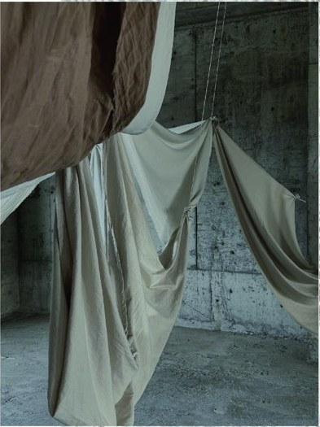
悬挂的布、木纹截面（灵感版）
2 设计命题问题句 废旧面料要经过什么，才算“有价值”？ 据新闻稿改写
3 元素／形态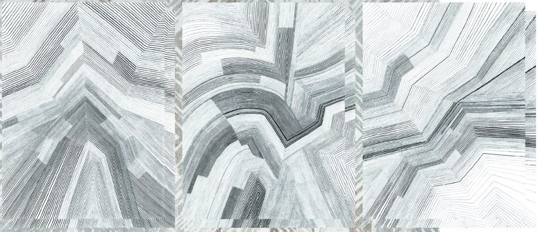
层状折线反复出现
4 草图发散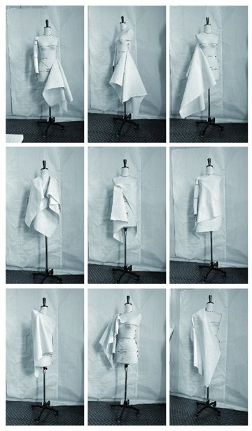
同一人台、白布挂了九次
5 材料／结构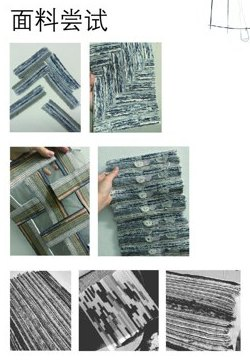
“面料尝试”七张
6 验证／修正页面未公开 看不到 ≠ 没做，也 ≠ 做了
这一格该有：改前／改后两张 ＋一句部位＋方向 填满的例子：第17页
7 系列／展示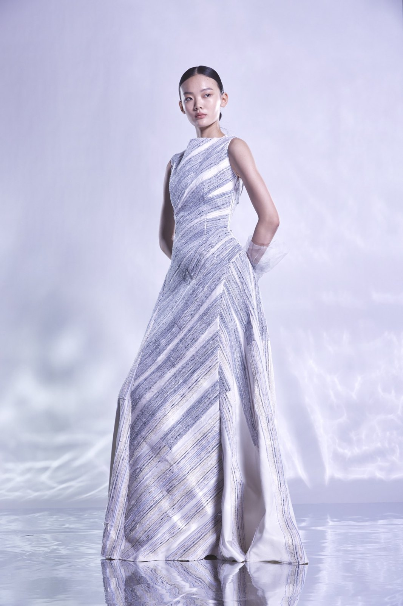
系列成衣与走秀
你的板面不能空这一格 别人公开出来的作品，页面上“验证／修正”也是空的。第04周 Gate 1 查的就是这一格：你怎么知道这个方向行得通？
图文：清华大学美术学院新闻（2025.5.27 发布，事在 2025.5.20）｜仅课堂研究使用｜访问 2026.9.17
第1课时｜45分钟
女装设计 · 第03周
07 真实过程②｜用第01周 A-0～A-5 审一遍
AI 做了哪几格？布是谁的，词是谁的？ 页面上写清了 AI 用在哪：花纹与色彩、廓形灵感、关键词合成 ——公开了，我们才能审。
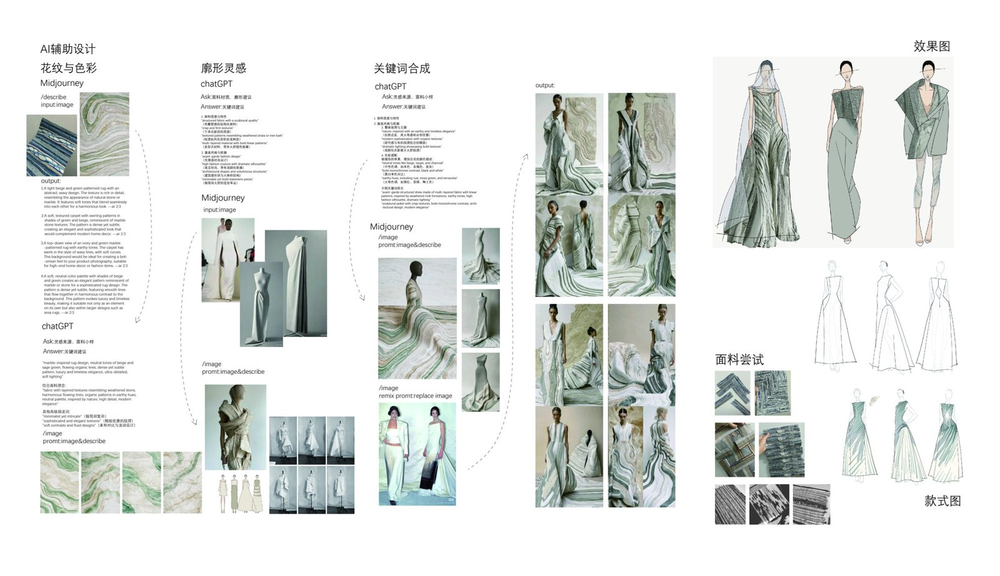
整页：左三栏写着 Midjourney／ChatGPT 的输入与输出；右下是面料尝试与款式图 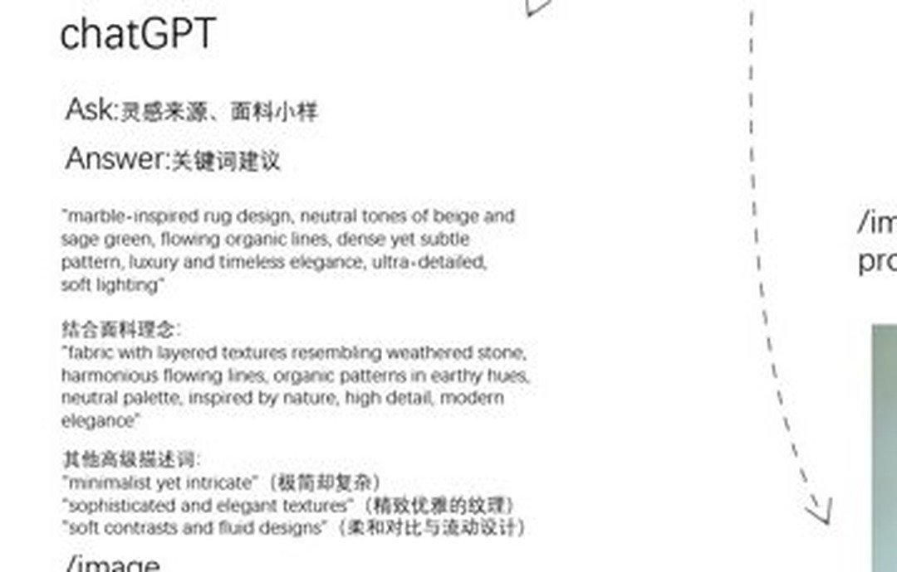
放大：提问写“灵感来源、面料小样”；回答里有 “timeless elegance”“精致优雅的纹理”“其他高级描述词” 提问栏里的面料小样 是输入 ，不是 AI 给的——就是第06页⑤那七张（第01周 A-0）。 AI 还回来的词里，有第01周要划掉的那两个词。划掉之后，还剩什么？ 输入 Midjourney 的纹样图页面未注明出处 ——你的板面每张图要有一行出处（附录 A11）。 一句话 布是作者的，词是 AI 的。判断（选哪块布、怎么切）不交给 AI；表现（效果图、配色试案）可以借，但要留痕。
图文：清华大学美术学院新闻（2025.5.27 发布，图文来源 染织服装艺术设计系）｜仅课堂研究使用｜访问 2026.9.17
第1课时｜45分钟
女装设计 · 第03周
08 主题成立的四条
一个主题要同时过四关，缺一条都只是“想法” 四条同时成立，才算主题。第04周 Gate 1 查“一致·具体·有限·可追溯”——这四条就是为它准备的。 第06页那个系列公开的部分过了③（九张立裁），“验证”那一格没公开——第06页。
① 有摩擦证据 来自真的发生过的事：自穿、视频、评价、速写，任选一种。
查：指得出是哪一次 → 第11–12页
② 有身体落点 说得出它改变哪一轴、哪一层。说不出部位，做不成衣服。
查：在 ___↔___ 轴上取 ___ 一侧
③ 能发散 ≥3 个方向 D 栏＝留住一个道理，换掉一样东西，放到一个部位。写不出三句的，只是一件衣服。
查：三句写全了 → 第20页
④ 有立场 她的处境是什么？你继续什么、拒绝什么？
查：第01周“我选择___的身体关系”
过不了怎么办 换一颗种子：A3 ③白布问题，或第19页的五个起点。换种子不扣分。
第1课时｜45分钟
女装设计 · 第03周
09 入口与事实句
七种流程只剩一句话的差别——第一句怎么写 四句链后三句人人一样；只有事实句跟你的入口走。 圈里的号码就是第02周的流程号；例句只示范句式，数字用你自己的记录。
①⑥ 图像调研 事实句＝一个场合或一组人反复发生的事。
例：毕业典礼上午 9 点开始，学位服下穿 2 小时。
真人：Grey Buscemi 第14页
② 材料 事实句＝一块布的行为。不用人台：手上折、揉、拉，拍照。
例：30% 弹力针织横拉 40%，10 秒回弹一半。
真人：Luca Fabry 第15页 第06页
④ 改造 事实句＝一件旧衣在哪里失效。
例：旧西装抬臂到肩高，后中缝张开 3 cm。
真人：Oli Clarke 第17页
⑤⑦ 叙事 · 工艺 事实句＝故事里的身体，或一种工艺靠什么成立。
例：盘长结一根绳不裁不缝，靠压叠自锁。
真人：Gemma Dolan 第18页
③ 立裁／身体 可选：用自己的身体代替人台，见第04周；真人：Tiger Peng 第16页。每条入口这一步拿出什么 → 附录 A03。
第1课时｜45分钟
女装设计 · 第03周
10 去标签
“高端女性”指导不了任何一条结构线 2分钟微练： A3 ①里用形容词写的成见，改写成“时长 ＋ 动作 ＋ 身体部位” ；用结构写的不改，带到发散板（第21页）。
Label
抽象标签 成功、自信、优雅、有东方气质 喜欢高级感、艺术与独特表达 经常参加重要活动 需要有存在感的礼服 Rewrite
改写 把它换成能被看见的一件事 。
每条必须含：时长 ＋ 动作 ＋ 身体部位
Condition
可观察条件 开幕活动连续90分钟 ，需要站立、楼梯移动与转身 致辞和近景摄影中，肩颈框景 必须保持完整 晚宴落座时，腰部支撑与裙摆不能压迫或卷入鞋跟 服装需要协助穿脱、专业运输、修复与长期保存 改不出来的 说明它还只是一个词 → 去做一次自穿记录（第11页①）。
第1课时｜45分钟
女装设计 · 第03周
11 证据的七个来源①｜一手
没有模特、没有访谈：先做三种一手证据 一手＝你自己穿、自己看、自己摸到的记录——这门课最看重，也最便宜。
① 自穿记录 穿自己的一件衣服，过 2 小时真实日程，记下 5 个时刻。
例：8:40 上楼梯，裙摆卷进鞋跟。
记：几点／动作／哪里卡住／一张照片
② 观察速写 在食堂或地铁，5 分钟画 10 个人。不拍脸，只画你看见的那条线。
例：背包带把外套肩线往后拉。
记：10 张速写＋地点·时段
③ 实物收集 收集旧衣、布头、五金、包装材料，写一句它靠什么成立。
例：按扣靠两片金属咬合，不靠缝线。
记：实物＋一句原理
放到哪里 身体句只能来自 ①自穿、④影像帧、⑤电商评价（④⑤ 见下一页）；速写和实物进主题板。
第1课时｜45分钟
女装设计 · 第03周
12 证据的七个来源②｜二手
别人留下的证据：四种，每条都要能被找到 二手证据不是“网上看到”——每张卡最下面那一行，就是别人找到它的路径。
④ 公开影像逐帧 在秀场、红毯或 vlog 视频里，截上楼梯、落座、抬臂的帧。
例：01:42 落座，裙摆堆在膝上。
记：平台·标题·上传者·mm:ss
⑤ 电商评价 摘抄同类商品评价里写到身体的话。
例：“坐下就勒”“抬手露腰”。
记：店铺·商品·评价日期
⑥ 公共观察记录 在一个地点数人数，只写不拍。
例：20 分钟里 12 人中 9 人没系前襟。
记：地点·时段·人数
⑦ 当季趋势一条 找当季 5 个品牌反复出现的一件事，不写风格词。
例：肩点外移／腰线上提。
记：5 个品牌·季度 → 第05周元素提取
放到哪里 身体句必须来自 ①④⑤ 之一；趋势一条写在板面右下角。例句只示范句式。
第1课时｜45分钟
女装设计 · 第03周
13 第1课时检查
10分钟书写＋2分钟教师反馈：把你的摩擦写成四句话 四句写同一件事 ，后一句继承前一句的证据——下面四个例 连起来就是一条链，照着写你自己的那条。下半场五件：问题句 都有（拿你写的那句去比），事实句 见第14页，身体句 见第17页；人物句一件也没有 ——公开页面不说谁穿，只能你自己去记（第11页）。
10:00 ＋2分钟教师反馈 · 独立书写
02分
事实句发生了什么 纸上出现：一句带时间或数字的事（按第09页你的入口）。例 早课 8:40，上楼梯时裙摆卷进鞋跟，这一周第三次。
02分
人物句在谁身上 纸上出现：一个具体身份＋她在场合里的任务。例 一个赶早课、还要拎着电脑包爬到四楼的学生。
02分
身体句在身体的哪一处、哪个动作 纸上出现：部位＋动作＋出处一行（自穿／影像／评价）。例 上楼梯抬腿时，裙摆压在鞋跟上（自穿记录，9月12日）。
02分
问题句哪一处能改 纸上出现：一个能用结构、材料或动作回答的问题。例 下摆抬高多少、开衩开到哪里，才不会踩到？
笔记①｜判断句 问题句抄进本周笔记第①栏。禁用词出现一次，该句不计。 下半场：15 真实过程／2 边界／3 工具／15 发散板／7 讲评／3 收尾
第2课时｜45分钟
女装设计 · 第03周
14 入口①｜调研驱动 · 概念→成形①
Grey Buscemi：挖在板上的两个孔，原样出现在台上的身上 问题句 看上去可靠的东西，底下靠什么撑着？ 据报道：他花了几个月看老飞机的收藏和工程档案，再做出开槽拼接的薄板衣服。学生作品。
1 排布图
竖线在三个高度上错开，底下数着 5／40／13／40／7 → 2 元素／形态
同一个形挖了两份：一个椭圆孔＋一个弯三角孔 → 3 材料／结构
孔里塞进布：板是硬的，穿过去的那一块是软的 → 4 系列／展示
椭圆孔出袖子，三角孔出手；裙褶也在几个高度上错开 图：1 Granary《CSM MA 2026》（2026.2.19），过程图随文发布｜理念据同文，教师翻译｜仅课堂研究使用｜访问 2026.9.17
第2课时｜45分钟
女装设计 · 第03周
15 入口②｜面料先行 · 概念→成形②
Luca Fabry：先定“怎么接”，再定“做成什么” 问题句 两块布非得用线才能连上吗？ 据报道：他改用工业上的接合办法，让衣服上看不见缝线。学生作品。
1 排布计划
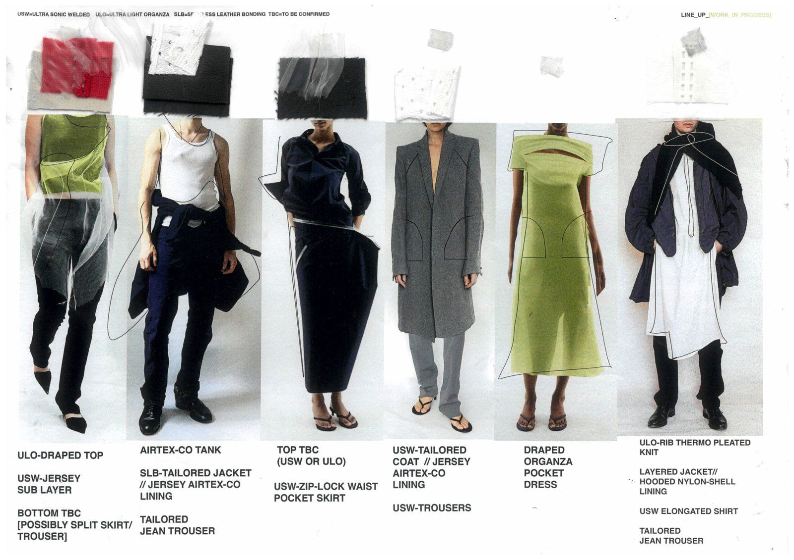
整季排成一排，每一套下面写着这一套用哪种接法 → 2 接法本身
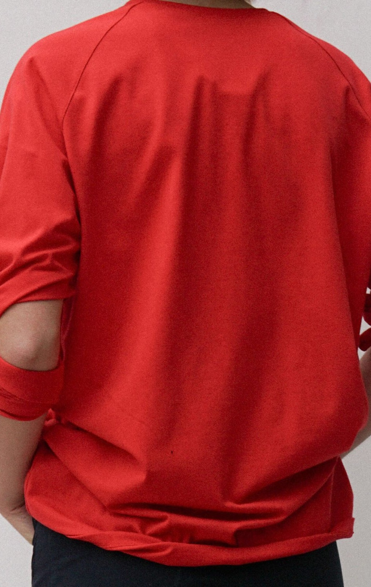
从领口斜到腋下的那条线上，一针线也没有 → 3 上身测试
换成一件收腰外套：同一件，前后各看一次 → 4 系列／展示
台上那件的肩线和第②张是同一种接法 图：1 Granary《CSM MA 2026》（2026.2.19），过程图随文发布｜理念据同文，教师翻译｜仅课堂研究使用｜访问 2026.9.17
第2课时｜45分钟
女装设计 · 第03周
16 入口③｜立裁／身体 · 概念→成形③
Tiger Peng：每一次抓法，都在纸上写了名字 问题句 衣服先要能跟着人动，还是先要好看？ 据报道：衣服建在动着的身体 上，用拉紧的力定形。①②是同一页作品集跨页上的 Figure 7 与 Figure 8。学生作品。
1 身体上披
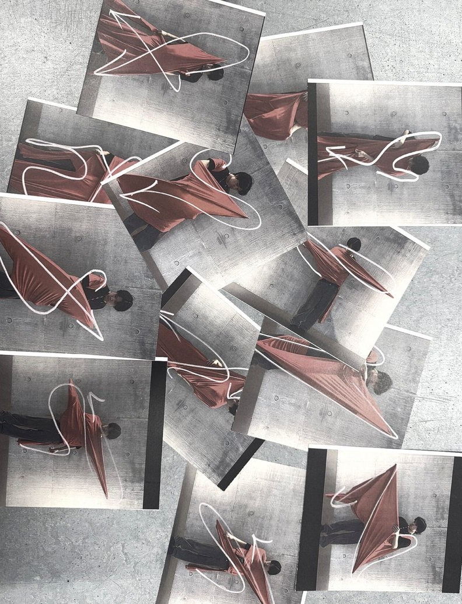
同一块布披了十几次，每张上用白线 描出当时的轮廓 → 2 材料试验
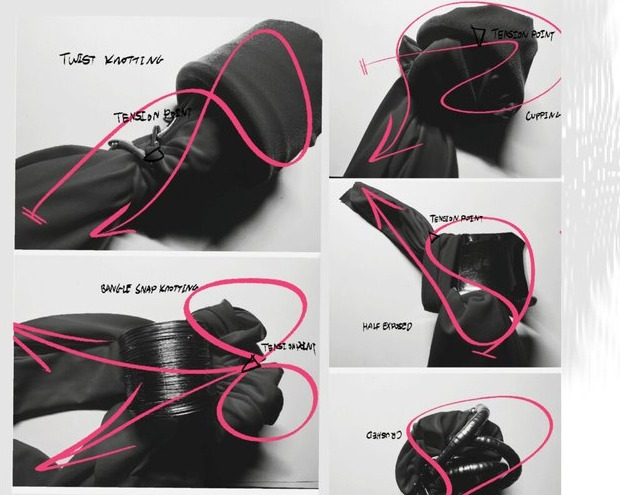
每一格旁边都写了名字：TWIST KNOTTING · CUPPING · CRUSHED → 3 系列／展示
手上那团皮子，被两只金属镯箍住 ——和②里的做法一样 图：1 Granary《LCF MA Fashion 2026：The Body Under Pressure》（2026.2.21），秀场摄影 Roger Dean，过程图随文发布｜理念据同文，教师翻译｜仅课堂研究使用｜访问 2026.9.20
第2课时｜45分钟
女装设计 · 第03周
17 入口④｜解构改造 · 概念→成形④
Oli Clarke：工作室里怎么披的，台上就怎么披 问题句 旧衣服拆开以后，怎么决定接回去的样子？ 据报道：他在古董市场做过四年买卖，用捡来的材料和衣服做设计，做到分不清哪些是捡来的、哪些是做出来的 。学生作品。
1 拆开
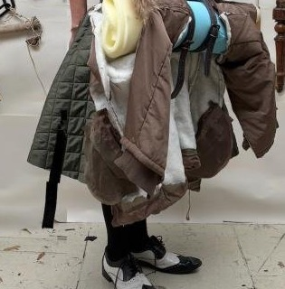
一件旧外套拆成零件：内胆、口袋、绒里、带子 → 2 纸上先做一遍
牛皮纸剪开又贴起来，先把形状做出来 → 3 身上披一遍
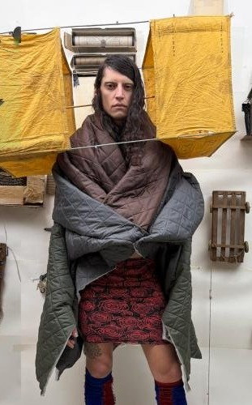
袖子不穿进去，直接围上再在腰上收住 → 4 系列／展示
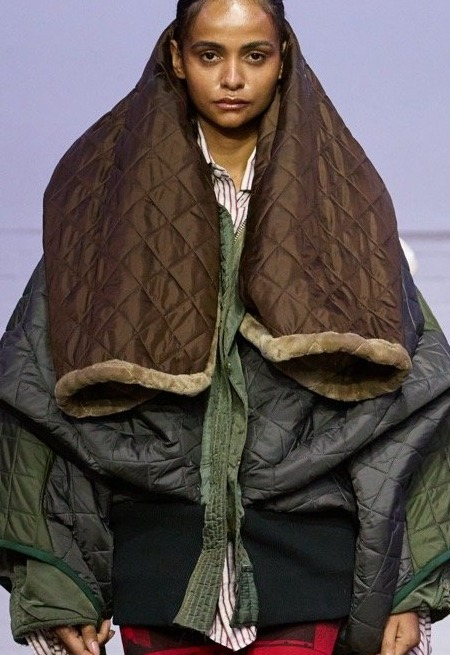
台上是同一件 ：第①张的棕绗缝和那一圈毛边，都在 图：1 Granary《CSM MA 2026》（2026.2.19），过程图随文发布｜理念据同文，教师翻译｜仅课堂研究使用｜访问 2026.9.17
第2课时｜45分钟
女装设计 · 第03周
18 入口⑤｜叙事／概念 · 概念→成形⑤
Gemma Dolan：板上挑中的那块紫，一直走到了台上 问题句 被人说成俗气的料子，能不能撑起一整套？ 据报道：她不接受“越简单越算数”那套排序，用常被看轻的料子做了一套给女性穿的衣服。学生作品。
1 参考／调研
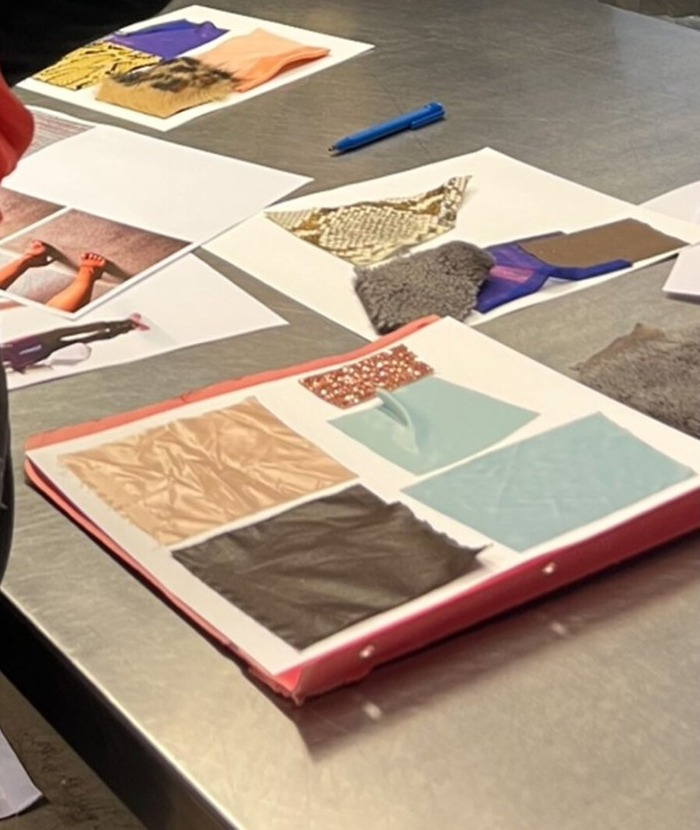
先把料子摊在台上挑，不是先画图 → 2 转译
挑中的那块被裁成一条一条 → 3 原型
条子绕到人台上，先看它自己站不站得住 → 4 系列／展示
台上的裙子还是那块紫：叠绕的条子 和一条留出来的尾巴 图：1 Granary《CSM MA 2026》（2026.2.19），过程图随文发布｜理念据同文，教师翻译｜仅课堂研究使用｜访问 2026.9.17
第2课时｜45分钟
女装设计 · 第03周
19 证据边界｜第01周再用一次
作品集只留下挑过的页面，所以它证明不了这四件事 看得见的写“可见”，看不见的写“待验证”——第01周最后一页的规矩，对别人公开的作品、对你的板面，一样适用。 下面的数字，课后那张分类表上可以自己数 。
① 先后顺序 排版的先后不等于做的先后。分类表“立裁／身体”下 8 个人，文字支持的只有 1 个 ——其余 7 个写着“待证”。
→ 不写“先做了A再做B”
② 数量 看到 9 张，不等于只做了 9 张。38 人里“叙事概念”10 个、“市场产品”1 个 ——这是文字容易写什么，不是人真的怎么做。
→ 不猜画了多少
③ 被放弃的方案 大多不进作品集。但也有留下来的：第25页那五条裙子，画在同一张试身照上 。
→ 所以你的板面要留下划掉的格
④ 自述 自己说的 写“据自述”，别人写的 写“据报道”。分类表每一行都注明依据和状态。
→ 图／自述／报道 分开
没带 A3 的人 五个起点选一个当种子：档案（14）／布（15）／布在身上（16）／旧衣（17）／料子（18）。教师种子见附录 A12。
图：1 Granary《CSM MA 2026》（2026.2.19），过程图随文发布｜理念据同文，教师翻译｜仅课堂研究使用｜访问 2026.9.17
第2课时｜45分钟
女装设计 · 第03周
21 课堂实操
15分钟：发散板 9 格 种子不变，只换“换成”和程度；画清楚，不画好看。
15:00 每格 50 秒 · 不许跳格
03分
写种子 纸上出现：种子栏一句话＋一张小图。格式＝部位＋决定；写不出的，把第13页问题句的问号去掉，选一个答案。
08分
画九格 纸上出现：9 张小草图；同一行三格＝同一个“换成”的三个程度。
04分
补部位词＋三句 纸上出现：每格一个部位词；每一行写一句 “保留___原理，换成___，用在___”，三行共三句。最后在右侧四条自查栏打 ✓。
结束时
交出来 纸上有：种子＋9 格＋9 个部位词＋3 句 。画不出的格写“换成___”。
动笔前看一眼 同一个人台、同一块白布，挂了九次 ——种子没换，换的是挂法。你的九格是同一件事。第06页那个系列的“灵感版”右侧 配发 A3 发散板模板（9 格＋顶部种子栏＋右侧四条自查栏）。右侧自查栏的 ✓ 是你自己打的；同伴的 ✓ 打在每格旁边（第22页）。
第2课时｜45分钟
女装设计 · 第03周
22 同伴讲评
7分钟：同伴按四条给九格打 ✓ 同伴只按第08页四条打勾 ，不替你设计。
07:00 两人一组 · 只打勾不设计
04分
同伴打勾 纸上出现：每格旁边 ①②③④ 的 ✓。①旁边写“哪一次” ——指不出，①不给。
02分
本人圈格 纸上出现：至少 2 个圈，回家各扩成 9 格。
01分
笔记② 笔记上出现：圈的格证据来自哪一种（第11–12页）＋出处一行。
反馈句式
过了几条＋改哪里 “过了①②，差③；下摆更长、侧缝开衩 ”——部位＋方向 ，缺一个不算意见（看右边）。
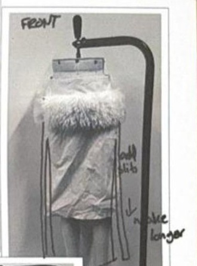
说成这样才算 两句都带着部位：make longer （向下的箭头指下摆）、add slits （一条线指侧缝）。学生作品的修订页 笔记②｜证据位置 写进本周笔记第②栏。
图：1 Granary《CSM MA 2026》（2026.2.19），过程图随文发布｜理念据同文，教师翻译｜仅课堂研究使用｜访问 2026.9.17
第2课时｜45分钟
女装设计 · 第03周
23 本周形成性检查·六条
第03周检查：主题有没有证据、落点、量和立场 四条各 5 分（共 20 分，只用于本周反馈）＋两条通过性条件 ；六条都要在发散板上找到，不能只靠口头解释补足。
本页不讲，随发散板模板一起发下
✓ 摩擦证据 5分 来自第11–12页七个来源，指得出是哪一次。
→ 期末｜时代性与创意
✓ 身体落点 5分 说得出轴和部位（三轴·三层）。
→ 期末｜当代女性适配
✓ 发散量 5分 课内 9 格＋3 句；同一行同一个“换成”。
→ 期末｜时代性与创意
✓ 立场 5分 写得出她的处境，你继续什么、拒绝什么。
→ 期末｜市场与定位
✓ 出处一行 进板面的每张图都有一行出处。
→ 通过性条件，不计分
✓ 图像使用三条 附录 A11三条都做到。
→ 通过性条件，可一票否决
本周不评 趋势性与元素、整体造型美感、统一与丰富——第05周起。
第2课时｜45分钟
女装设计 · 第03周
24 下周准备
回家把 9 格做到 27 格，再把证据带齐 第04周从 27 格里收敛出一格——没有量，就没有可选的。
本页不讲，随发散板模板一起发下
发散板 补到 27 格：圈出的 ≥2 格 × 各 9 格。
自穿记录 1 次：5 个时刻＋照片。
观察速写 10 张。
图像 20 张，每张一行出处。
实物 ≥2 件。
当季趋势 1 条：5 个品牌里重复的一件事。
完整来源卡 2 张：你主题最靠的两条。
笔记③ “下周之前我要核对：______。”
提交 本周不单独提交；第05周与第04周主题板、设计任务书合为平时作业 1。第04周八格全部带来 ——27 格、自穿记录、速写、20 张图、实物、趋势、来源卡、笔记③；再加第02周那张 A3 ——立场句第三级写在上面（第04页），第04周要把它压成一句。
第2课时｜45分钟
女装设计 · 第03周
25 收尾｜重写开场那一句
改方向不是失败；现在把开场那一句重写一次 下面一排是同一张试身照，印了五次 ；五张上面画着五条不同的裙子。挑过的痕迹，就这样留在纸上——没被选中的，也还在。
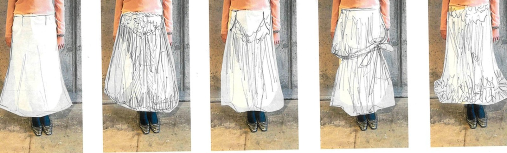
同一件上衣、同一双鞋、同一面墙——只有裙子换了五次 ：腰（平的／抽褶／育克／系带）、量（贴身／鼓起／垂坠）、下摆（直／收口／不对称／荷叶边）。学生作品 第02周第28页总览表：②③⑤⑦ 的数字会往回走——顺序并不相同。 但要把放弃的那一版留下——它就是你板面上划掉的格。
3 分钟：拿出开场折起来的纸，挑一句重写 「造型 ___ 在 ___↔___ 轴上取 ___ 一侧，用 ___ 实现；证据在第 ___ 页的 ___。」
造型 A第14页 造型 B第18页 造型 C第16页 对照 开场时手上只有一个词；现在写得出“薄板、两处开孔、白坯布袖”——差别是你看到了过程。你的板面，就是让别人也看到过程。
图：1 Granary《CSM MA 2026》（2026.2.19）与《LCF MA Fashion 2026》（2026.2.21，秀场摄影 Roger Dean），过程图随文发布｜理念据同文，教师翻译｜仅课堂研究使用｜访问 2026.9.20
第2课时｜45分钟
女装设计 · 第03周
一句话小结：我的主题过了哪四关 “我的主题来自 ______（哪一种证据）；它落在 ______（部位／轴）；我能把它换成 ______、______、______；我继续 ______、拒绝 ______。 ”
全程口径
女装设计 · 第03周
A01 成绩地图
这一周的输出，最后去了哪里（一）：大纲与平时成绩 每周的“成立／部分成立／需重做”不是孤立的评语。下表把它接到平时成绩 和期末六项 上——这一页是全程唯一的口径，各周页面与它不一致时以本页为准。
一、大纲固定的部分（不可改）
总评 平时成绩 40% ＋ 期末实践 60% 考核大纲 四 期末实践 60% 六项：①时代性与创意10 ②趋势与元素10 ③当代女性审美20 ④系列效果图20 ⑤市场与定位20 ⑥风格统一与丰富20 考核大纲 期末评分标准 课程目标 权重 目标1 美学原理 40% ｜ 目标2 系列女装设计 40% ｜ 目标3 主题与元素 20% 考核大纲 三
二、本课程的折算规则
平时成绩 100 分怎么分 出勤 10 平时作业 60 笔记 30 （这 100 分再按 40% 计入总评） 平时作业 60 分怎么分 全学期共 4 次，各 15 分 ——不是每周都交 ：第03–04周做，第05周交 ：根据拟定的灵感和主题制作板面（第03周发散板＋第04周主题板与设计任务书，第05周合为一份提交） 第06周做，第07周交 ：设计元素拆解板面 第07–09周做，第10周交 ：春夏季系列女装产品开发 第10–12周做，第13周交 ：秋冬季系列女装产品开发。成立＝满分 部分成立＝一半 需重做＝0 ；逾期按“部分成立”上限计。
全程口径
女装设计 · 第03周
A02 成绩地图（续）
这一周的输出，最后去了哪里（二）：其余周次、笔记与 Gate 接上一页“二、本课程的折算规则”。
那其余周次的课堂输出算什么 第01·02周不布置作业 ——产出在课堂内完成，带到下一周用，不上传；第14–16周的产出也不计入那 4 次。各周检查表的分数只用于当周反馈；第14–16周的产出进入期末实践 60% 。 笔记 30 分记什么 每周一页，三栏 ：①判断句 （要能被反驳） ②证据位置 （第几张图的哪条线） ③下一步动作 （下周之前核对什么）。抄板书的那一页不计分 ——记你自己的判断和依据。三栏在哪几页收，页面上标了 笔记 ①②③ 。Gate 是什么 Gate 1(第04周)・Gate 2(第08周)・Gate 3(第12周)是通过性条件，不是分数 。未通过不扣平时分，但下一阶段的作业无法开始，补齐后继续。 反思与自评归哪里 第15周编辑记录、第16周反思写作属于期末阶段 ，不另设平时分，也不进入期末六项——它们让六项里的作品说得清楚。
同一份作业只在一个地方计分：课堂输出 → 平时作业分 ，期末作品 → 六项 60% 。两边都写到的项目（如系列效果图），平时看的是过程证据 ，期末看的是最终结果 。
课后查阅｜教学补充
女装设计 · 第03周
A03 七种流程·这一步拿什么
你的入口“这一步要拿出什么”：去第02周附录那一页 打印用。选了哪条入口，就打印第02周对应的那一页附录，照着对自己的发散板和事实句。本周不另做新的工作单 。
入口 第02周附录 本周事实句（第09页） ① 调研驱动 第02周附录「流程①」页 图像调研：场合／人群反复发生的事 ② 面料先行 第02周附录「流程②」页 材料：一块布的行为 ③ 立裁／身体 第02周附录「流程③」页 身体：用自己的身体代替人台（第04周） ④ 解构改造 第02周附录「流程④」页 改造：旧衣在哪里失效 ⑤ 叙事概念 第02周附录「流程⑤」页 叙事：故事里的身体 ⑥ 市场产品 第02周附录「流程⑥」页 图像调研：场合／人群反复发生的事 ⑦ 文化手艺 第02周附录「流程⑦」页 工艺：一种工艺靠什么成立
课后查阅｜教学补充
女装设计 · 第03周
A04 穿着者画像·六个提问面
穿着者画像的六个提问面：证据来自第11–12页七个来源 这六面用来问，不用来打分。本周不做访谈 ；第04周再加自身动作照、影像帧对照、图纸标线。
身体比例 肩宽、胸腰臀分布怎样影响合体和体积？
本周：自穿站姿照＋速写
姿态与动作 站、走、坐、转身、上台阶时，轮廓还完整吗？
本周：影像逐帧＋自穿 5 个时刻
时间与仪式 一天里哪几个时刻，衣服承担什么角色？
本周：公共证据流程＋自穿时间轴
空间与光线 教室、地铁、室外、夜灯怎样改变材料的样子？
本周：公共观察记录＋报道图
护理与保存 怎么洗、怎么收、多久会坏？
本周：实物洗护标签＋电商评价
身份与距离 她想和别人保持怎样的距离与场合感？
本周：电商评价原话＋公共观察
课后查阅｜教学补充
女装设计 · 第03周
A05 传统工艺·四种结构原理
把工艺当结构读：四种原理，四条可转译的服装决定 不看纹样好不好看，只看它靠什么成立 ，以及那条原理能变成服装上的哪一个动作。不是把纹样贴在表面。
苏绣｜盘金（蟠金） 原理 ：金线不穿透地组织，盘在表面再用细线钉缝固定 ；轮廓是一条被压住的凸起线，地布强度不受损。
转译：不破坏面料的表面结构线 ——用明线、嵌条或包边定义分割。
缂丝｜通经断纬 原理 ：经线通贯，每块颜色各用各自的纬线、在色界折回 ，交界留细缝。图案边界即织造边界。
转译：色块边界＝结构边界 ——配色分割落在拼接线上，不让印花跨过接缝。
香云纱｜薯莨染整 原理 ：薯莨浸染、河泥“过乌”、草地日晒，只在一面 形成涂层；两面手感与重量不同 ，正反不可互换。
转译：面料有正反，裁片就有方向 ——哪面朝外、折边怎么翻，材料先定。
编结｜盘长结 原理 ：一根连续的绳 ，不裁断、不缝合，靠固定的上下压叠路径与摩擦自锁；可解可复原。
转译：可逆的连接与开合 ——替代拉链或纽扣时要能说出解结顺序与受力方向。
图源与许可：苏绣 — 《刺绣蟠金箭衣》清，摄影 白色瑰宝，CC BY-SA 4.0（Wikimedia Commons）；缂丝 — 方补，明末至清初，The Metropolitan Museum of Art，CC0；香云纱 — 《香云纱晒纱地》2023-02-25，摄影 方人也，CC BY 2.5；编结 — 《盘长结三维结构》2020，作者 杨雨心，CC BY-SA 4.0｜用途：均为允许再使用的公开许可素材，用于课堂工艺原理观察；完整文件页与许可条款见 w03_craft_assets/CREDITS.json
课后查阅｜教学补充
女装设计 · 第03周
A06 图像与身体资料使用规则
图像与身体资料：拍摄、试穿与公开使用必须分别保护尊严和边界 本周不要求 访谈、量体或试穿。如确有访谈、拍摄或试穿 ，按下面四条逐项说明并取得许可；课堂上的三条简版见附录 A11。
分层知情同意 量体／试穿／课堂展示／公开发布
必须 分别说明用途、保存时间、观看对象与是否公开，并取得可记录的明确许可。
禁止 用一次口头同意替代所有后续用途，或临时增加拍摄和公开范围。
数据最小化与匿名 姓名／面部／量体表／身体记录
必须 只记录设计验证所需数据，以编号代替姓名，并限制原始文件访问。
禁止 传播完整量体表、可识别面部或与设计问题无关的身体信息。
试穿安全与身体尊严 更衣／触碰／压力／疲劳／评价语言
必须 先询问触碰许可，提供私密更衣条件；出现疼痛、眩晕或压迫时立即停止。
禁止 评价身体“标准／不标准”，或为了照片和造型效果要求继续忍受不适。
公开、AI与撤回权 作品集／社交媒体／公开网页／AI工具
必须 公开前再次确认范围；允许撤回照片或陈述，并能找到和删除对应文件。
禁止 未经单独许可把真实试穿图、身体数据或客户信息上传外部平台与AI系统。
公开边界 未取得“公开使用”单独许可的资料，只能留在受控课堂研究中：不得进入社交媒体、公开作品集或外部 AI 工具。本课件含 1 Granary（摄影 Rebecca Maynes 等）与清华美院新闻图片，按课堂研究合理使用，版权属原作者 。课件发给选课学生的课程网页是不被搜索引擎收录的限定链接 ：请勿外传链接，也不要把图片另存后另行发布。
课后查阅｜教学补充
女装设计 · 第03周
A07 调研地图
调研地图：把分散的证据组织成一条可验证的主题 不要先决定“风格”；先让穿着者、正式场合、时代语境、材料工艺与结构验证在同一张图中发生关系。
设计命题 谁＋在什么场景＋遇到什么摩擦＋服装要验证什么
从资料到命题的三个动作 01 分类 标出每条资料的来源、时间、对象和场景，并分别归入五个证据区域。
02 交叉 寻找至少两类来源中反复出现的身体、礼仪、材料或文化矛盾。
03 转译 把矛盾转成能用结构、材料、动态或合体验证来回答的问题。
本页输出 1张调研地图＋1条可验证的主题命题
课后查阅｜教学补充
女装设计 · 第03周
A08 期末评价·六项（学期通用）
本周成果将进入同一套六项终期评价 这条 100 分的横条就是期末评分表。蓝色三项（共50分），本周就在积累证据 ；灰色三项（共50分）自第05周起。
时代性与创意 主题回应当下，并形成自己的问题与立场。
本周评：摩擦证据 5分 · 发散量 5分
趋势性与元素 提炼的设计元素与当季趋势、审美和来源一致。
本周不评 · 第05周起
当代女性适配 款式回应身体、动作、场景与真实穿着需求。
本周评：身体落点 5分
整体造型美感 比例、色彩、材料与细节共同形成完整造型。
本周不评 · 第05周起
市场与定位 顾客、价格、品类和使用情境边界清楚。
本周评：立场 5分
统一与丰富 风格统一，同时具有角色、搭配与造型变化。
本周不评 · 第05周起
出处一行 与图像使用三条 不计分，都是通过性条件 ；其中图像使用三条可一票否决 。依据《25级〈女装设计〉考核大纲》期末实践考试评分标准（满分100分）。本周评的 20 分见「第03周检查」页。
课后查阅｜教学补充
女装设计 · 第03周
A09 本周三句话
本周三句话 01 主题过四关 证据 · 身体 · 量 · 立场——缺一条，只是想法。
02 事实句跟入口走 四句链的后三句人人一样，第一句跟你的入口走。
03 量先于选择 没有 27 格，就没有第04周的那一格。
十六周课程路径 女装设计 · 第03周｜第1课时 45分钟
十六周不是孤立主题，而是一条连续的设计证据链 前8周建立方法并完成中期验证；后8周深化春夏与秋冬系列，最终独立完成主题系列与答辩。
01–04 判断与定位
03本周
平时作业 1｜03–04周做 灵感与主题板面 15分 风格·主题·发散 05–08 提取与验证
06
平时作业 2｜06周做 元素拆解板面 15分 元素变形·分解板 07
作业 2 截止 平时作业 3｜07–09周做 春夏系列开发 15分 春夏系列策划 V1 09–12 季节系列开发
10
作业 3 截止 平时作业 4｜10–12周做 秋冬系列开发 15分 秋冬系列概念与外套主线 13–16 独立项目与考核
13
作业 4 截止 自定主题：独立方法调用与首次提案 平时作业 4 次（各 15 分） 做：03–04 · 06 · 07–09 · 10–12 交：05 · 07 · 10 · 13
课后查阅｜教学补充
女装设计 · 第03周
A11 出处两级制
两条核心证据写完整来源卡，其余每张一行 其余每张图只写一行：品牌／季度／来源网站 （视频：平台／标题／mm:ss）。没有这一行的图，不能进板面。
完整来源卡（只写 2 张） 写什么 发布机构／作者 机构全名或原始发布者 资料标题 完整标题，不用自己改写的关键词代替 日期与地点 发布日期、活动日期、观察地点 原始链接／编号 URL、展览名、造型编号或档案编号 事实摘录 只摘能再次核对的流程、时间、动作、材料或数据 使用边界 能证明什么？不能证明什么？还缺哪一种证据？
图像使用三条 ① 公开图片注明出处，只用于课堂 ② 同学照片不经同意不进板面 ③ 真人照片不上传外部 AI → 附录 A06
课后查阅｜教学补充
女装设计 · 第03周
A12 公共证据·教师种子
课堂公共证据 A／B／C ＋ 三个教师种子 A／B／C 只写事实句 ；身体句必须来自自穿、影像帧或电商评价。换种子不扣分。
A｜艺术机构启幕礼 2026-09-10 山东美术馆启幕礼：主持→短片→贺信→三位嘉宾致辞→揭幕→答谢。
能证明 流程顺序；多人轮流上台 不能证明 时长；来宾穿什么、哪里不适 来源：齐鲁壹点 2026-09-12
B｜颁奖典礼红毯 2026-06-26 晚 白玉兰奖：先红毯后颁奖，同一晚，腾讯视频全程直播。
能证明 先红毯后典礼；全程在镜头前 不能证明 各环节时长；嘉宾的身体负担 来源：上海电视节官网／中国新闻网 2026-06-26
C｜时装周发布 2026秋冬上海时装周：3月16日发布会，3月25日启幕，场地分布在多个区。
能证明 日期；场地分散在多处 不能证明 来宾怎样移动、穿多久 来源：上海市商务委员会 2026-03-17
三个教师种子 自己的种子过不了四条，换一个：
通学 40 分钟：地铁温差，外套脱不脱？ 毕业典礼：学位服下，2 小时站立合影 晚自习 6 小时：腰、大腿后侧、袖口 原始链接：A https://www.163.com/dy/article/L6KATJKL0530WJIN.html｜B https://www.stvf.com/content?aid=101260626210310840297722253676549223；https://www.chinanews.com.cn/tp/hd2011/2026/06-26/1195975.shtml｜C https://sww.sh.gov.cn/swdt/20260318/efef2f72d60345bd9bb741ee770697de.html
课后查阅｜教学补充
女装设计 · 第03周
A13 发散案例①
同一个摩擦，三个入口：三个人都从家里的人和物开始 三位都是 学生，起点相近，走的路完全不同——发散不是换风格，是换入口 。
① 研究驱动
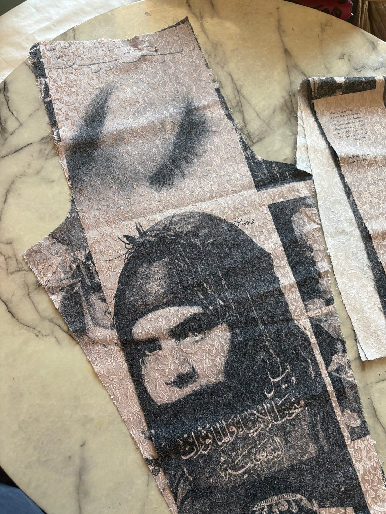
Zahra Al-Najjar：裁好的衣片上直接印着档案照片 ——研究的材料变成了布 ④ 旧衣重做
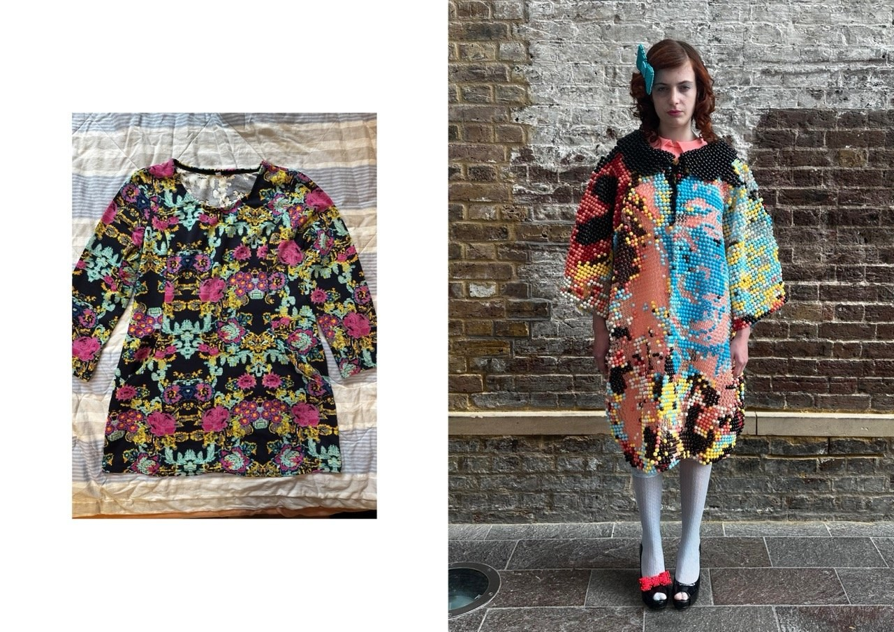
Chi Wei：左是家里的旧花上衣，右用珠子拼出同一张花 ⑦ 一种手艺
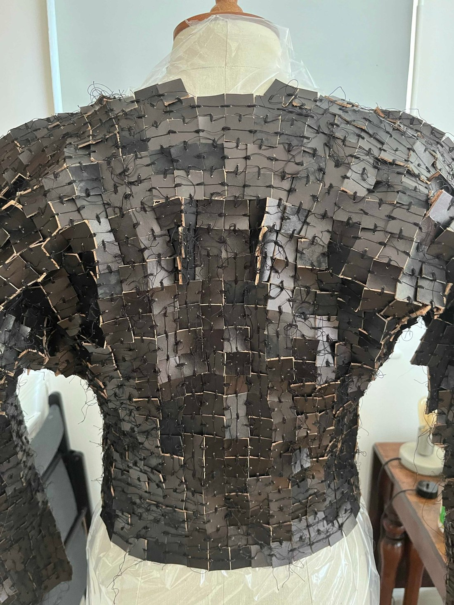
Sophia Layk：小方皮片横排叠着，每块一个线结 据报道（教师译，非本人自述）：Al-Najjar 看的是自己家里衣服层层穿搭的方式 ，并与 Iraqi Print Archive 合作；Chi Wei“回到童年的家 ，找到首饰盒、文具罐、家里的旧衣服、画和卡通人物”；Layk 的系列“献给 2024 年 12 月去世的母亲 ”，做法是“把不规则皮料裁成小方块，再像锁子甲一样打结连起来”。
同一个起点，三条路：印上去／重做一遍／一个动作重复到成衣 。你的九格也可以这样分三组，每组一个入口
图：1 Granary《Central Saint Martins BA Fashion 2026》（2026.6.4），秀场摄影 Rebecca Maynes，过程图随文发布｜理念据同文，教师翻译｜仅课堂研究使用｜访问 2026.9.17
课后查阅｜教学补充
女装设计 · 第03周
A14 发散案例②
问题起点 → 解决方式：从一张图反推能发散的原理 只看作品图 ，反推它在回应什么、用什么解决；能写成“保留___原理，换成___，用在___”的，就是可以发散的原理。
待放入图片 学生作业①：全身作品照，3:4 竖幅（经本人同意，教师放入）
无学生作业时的示范：Cristóbal Balenciaga 1957 布袋裙 学生作业①学生作业占位 问题起点 它在回应 ______（图上哪一处？） 解决方式 它用 ______ 实现（指出那条线） D 栏 保留___原理，换成___，用在___ 待放入图片 学生作业②：全身作品照，3:4 竖幅（经本人同意，教师放入）
无学生作业时的示范：Shushu/Tong 2025 学生作业②学生作业占位 问题起点 它在回应 ______（图上哪一处？） 解决方式 它用 ______ 实现（指出那条线） D 栏 保留___原理，换成___，用在___ 图像：学生作业（经本人同意，仅课堂使用）｜用途：仅用于课堂原理观察
课后查阅｜教学补充
女装设计 · 第03周
A15 发散案例③
量先于选择：留下来的那一张，是从一堆里挑出来的 不是“想出九个”，是先做出量，再从里面挑 。三页公开的记录都留下了挑的痕迹：九次挂法、四个圈、一盒皮片。
九次 同一块布
第06页那个系列：同一个人台、同一块白布，挂了九次 圈选 挑过的痕迹
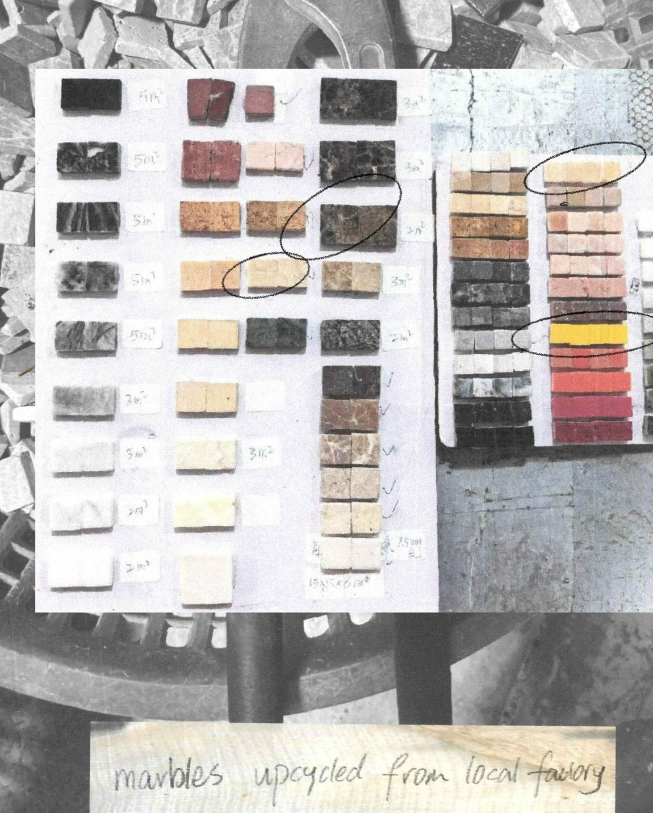
Lan Yang（学生）：小样表上有 ✓ 和四个手画的圈 一盒 同一个动作
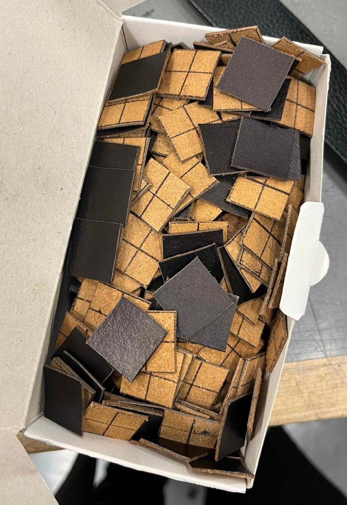
Sophia Layk（学生）：成衣之前，先有这一盒 皮片 主题板上活下来的那几张，是从这样的量里挑出来的。第21页九格不是九个想法，是九次试
图①：清华大学美术学院新闻（2025.5.27 发布，事在 2025.5.20）｜图②③：1 Granary《Central Saint Martins BA Fashion 2026》（2026.6.4），秀场摄影 Rebecca Maynes，过程图随文发布｜理念据同文，教师翻译｜仅课堂研究使用｜访问 2026.9.17
课后查阅｜教学补充
女装设计 · 第03周
A16 海外对照｜入口⑦ 文化／手工艺
María Alborés Lojo：不印“传统”，留下篮子的位置 课后查阅·海外对照。学生作品。自述：献给家乡加利西亚和二十世纪的加利西亚女性 ——男性一波波外出谋生，那里形成了象征意义上的母系社会 ；从传统女装的动态与体量出发，与当地手工艺基金会的匠人合作。
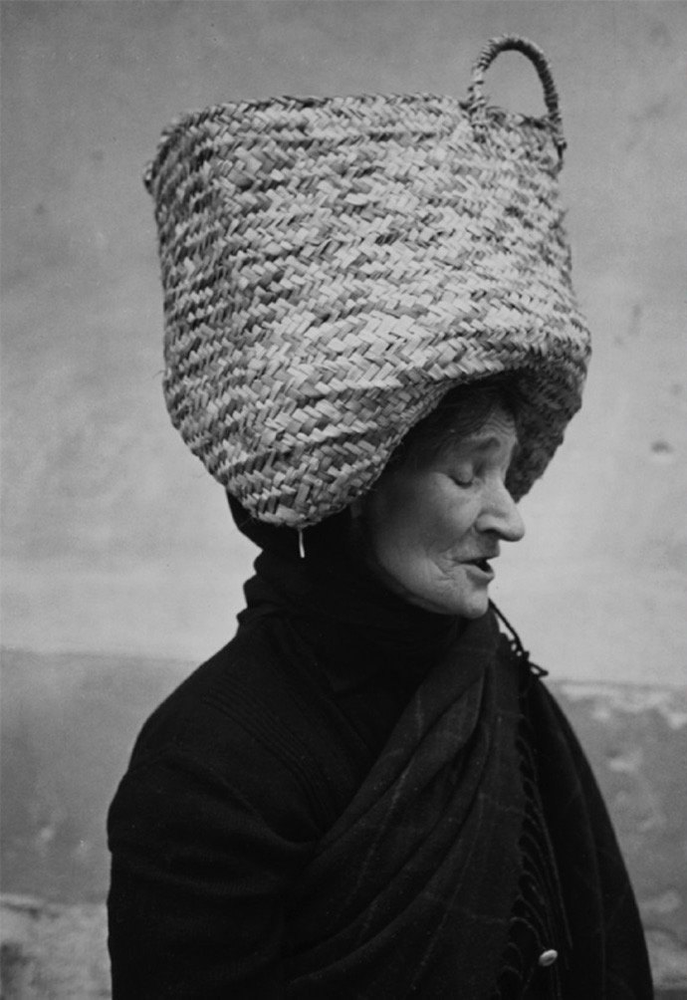
研究页：头顶草编篮子的女性（黑白老照片） → 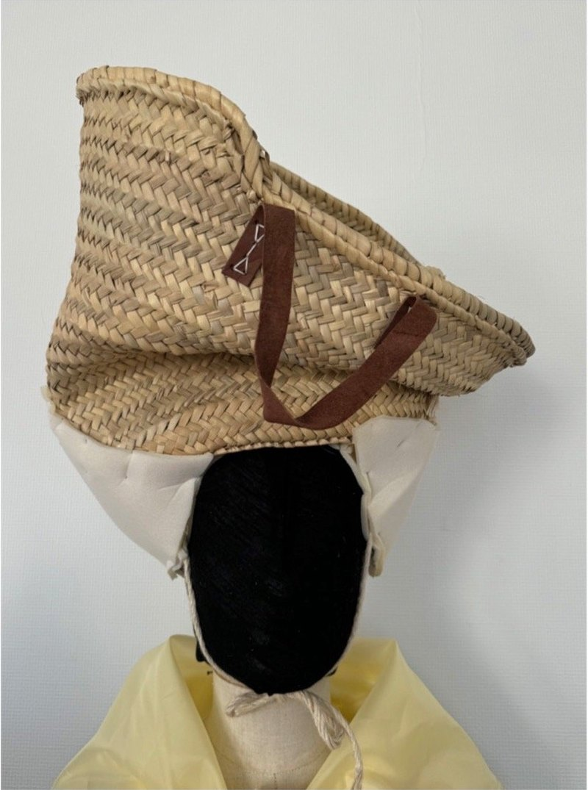
做出来的头饰：草编篮子扭转后戴在头顶 第02周流程⑦的走法：研究 → 筛选 → 实验 → 完成；核心是“原理，不是符号”（第02周第27页）
研究留什么 加利西亚女性、海边劳作传统（自述）；老照片（图） 实验做什么 把真的草编篮子变形、戴到头上（图） 筛选凭什么 不用民俗色，改用画家 Sorolla 海景里的芥末黄、海沫绿（自述） 修订改哪里 页面未公开 留下的不是纹样，是“东西放在头顶”这个身体位置 。照片里的人是不是作者的祖母，页面没有说——不能写
图：1 Granary《Antwerp 2025: Craft, Concept, and Complexity》（2025.6.20，文 Jorinde Croese，走秀摄影 Andrew Thomas），作品集页面随文发布｜理念据同文，教师翻译｜仅课堂研究使用｜访问 2026.9.17
课后查阅｜教学补充
女装设计 · 第03周
A17 入口⑦｜文化／手工艺
中国学生作品的工艺案例：不印“传统”，留下它靠什么成立 待放入：中国学生作品，传统工艺用作结构。 版式与第14–16页相同；自述只写原文有的句子，原文没有的写“页面未公开”。
待放入图片 过程图（待放入）：工艺试样、白坯布或工作台记录，3:4 竖幅
过程：______ → 待放入图片 成品图（待放入）：秀场或棚拍全身照，3:4 竖幅
成品：______ 第02周流程⑦的走法：研究 → 筛选 → 实验 → 完成；核心是“原理，不是符号”（第02周第27页）
研究留什么 ______（自述或图；页面没有的写“页面未公开”） 实验做什么 ______ 筛选凭什么 ______ 修订改哪里 ______ 留下的不是纹样，是______ （盘／折／系／织之一：一条结构原理）。与附录 A05 四种工艺原理同一种读法
图：待补（机构·标题·日期）｜仅课堂研究使用
课后查阅｜教学补充
女装设计 · 第03周
A18 态度②｜课后查阅
Cece Che：一句说不出口的话，落到椅子上 学生作品。据报道（非本人自述）：用衣服把说不出口的话的重量 看得见。据自述（记者引的两句原话）：“平纹针织与欧根纱把情绪的压力变得看得见，映出紧张时刻里情绪的流动” ；“它讲的是那些时刻里想说又说不出口的挣扎” 。
1 调研
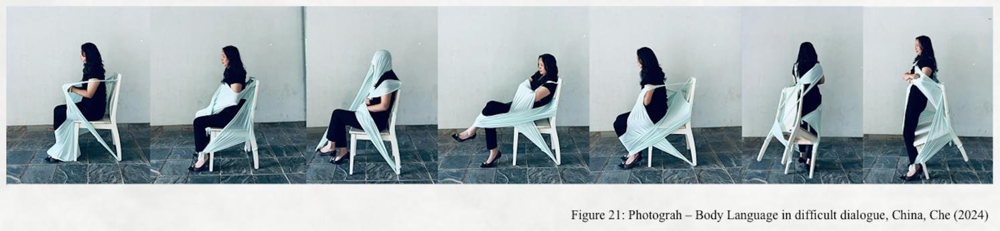
图 21：艰难对话里的身体语言——七个坐姿 → 4 立裁
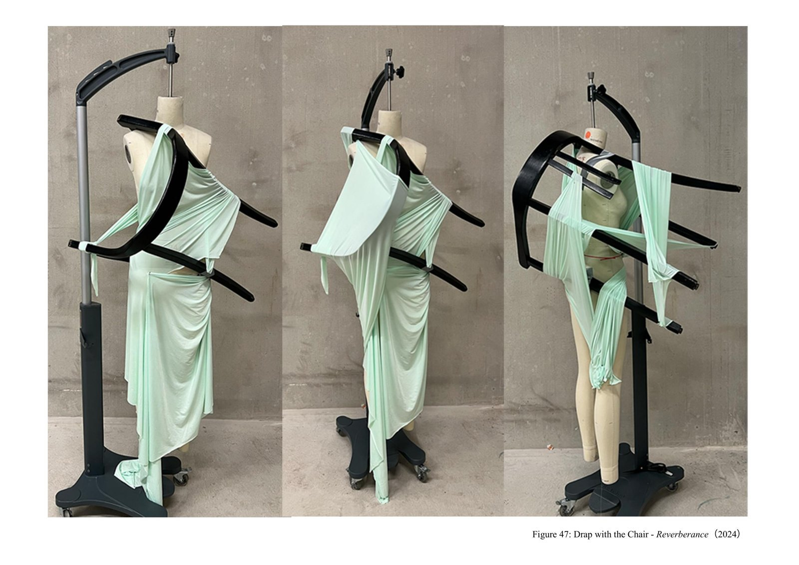
图 47：把椅子架上人台再挂布 → 7 系列／展示
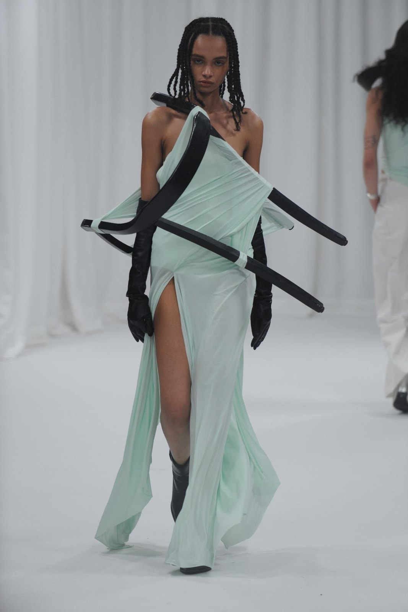
成品：椅子框架留在身上 图：1 Granary《LCF MA 2025: Fashion as dialogue》（2025.3.6，文 Pedro Vasconcelos），作品集页面随文发布｜理念据同文，教师翻译｜仅课堂研究使用｜访问 2026.9.17
课堂 全部
← →